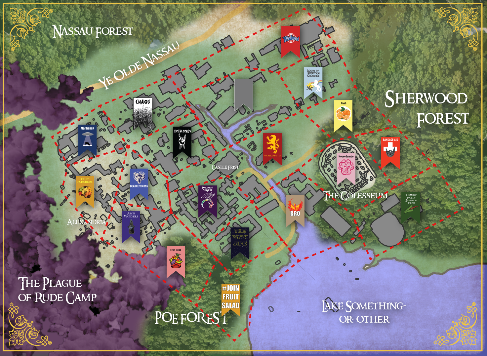

Overview
War has come to iD Tech Camps Princeton. The chaos began when the Mad King and Grand Wizard Severus Mossybeard the Wise declared that wakeup would henceforth be set at a firm 6:30am. Unable to cope with the lack of sleep and made distraught by further unreasonable demands, the lords of the great houses became doubtful of their king’s sanity. Battle lines were drawn across the once unified empire and whispers of uneasy alliances can be heard in the halls of Castle Frist. With the current monarchy on the brink of shattering it will be up to the people of iD Tech Princeton, as well as the strategic maneuvers of their lords and ladies, to determine the fate of this great kingdom.
Lay of the Land
Click to Enlarge
{kind=link}
Tuesday PM
In the morning of tuesday it was the Abyss Watchers who chose to strike. They sent their full force north
towards the well defended encampment of the Fruit Punchers. While Sunny D fought bravely, she was no match
for the giant Wolf of Farron and her fortifications were annihilated. On the run and outnumbered she retreated
to her war camp with Hatter close at her heels.
As hatter turned around to cheer on his forces, invigorated by his sound victory, his expression changed to one of
horror. His home, Forbes Village, was ablaze and the culprit was none other than Mango(e)s. Man certainly
did go to war. Fruit Salad had seized the opportunity to assault the Abyss Watchers’ undefended territory.
Unable to complete his siege, Hatter had no choice but to retreat. Swinging back to rally at Forbes he was
barely able to repel the ensuing attack. Mango(e)s left Hatter and his army devastated.
Meanwhile the Death Knights and House Lannister fortify Castle Frist so as to be able to withstand future onslaught.
While both the Fruit Punchers and the Abyss Watchers remain in the game, it is clear that they are not as strong as
they once seemed. The west is on fire and ripe for the taking. Will the campers aid the flailing factions
of the Fruit Punchers and Abyss Watchers? Will they join with their surrounding rivals and assist in
completing Mango(e)s sinister plot for world domination? Or will they bring their banners elsewhere entirely?
Tuesday AM
The Mad King Severus Mossybeard took things too far on Monday night. With Shmog and his Dracoliches marching on the
capital to take the throne, the Grand Wizard became desperate. He made threats to make wake up even earlier, raise
ticket taxes, and ban video games for the rest of the week. As the Death Knights drew closer to his keep the Grand
Wizard began his most insane plan yet, destroying every laptop with his Wildfire_Virus.exe. His friend and most loyal
Kingsguard, Jaime Lannister, watched on as his Mad King prepared to destroy everything the campers of iD Tech Princeton
had worked to build. The night came to a climactic close with Shmog bursting through the keep doors, sword in hand, ready
to slay the king and take over camp. Severus was prepared as he stood before Shmog with his hand on the button. He
claimed he would annihilate the projects and delete all backups. The Lich King, while powerful enough to defeat his opponent,
did not think it would be worth the great loss and found himself at an impasse. Before he could make his next move,
the Mad King was felled by his Kingsguard Jaime and the projects were left unharmed. Jaime earned the name Kingslayer
but truly believes that his decision was necessary for the good of the kingdom. When the dust of battle settled it was
clear that The Lich King’s goal to take over the Apothecary (south of Frist) was successful. House Lannister now controls
Castle Frist and is working to restore order to the realm. Hear Me Roar.
While Castle Frist lay under siege, overtaken by chaos and destruction, a powerful alliance is being built between the
Bearcepticons, Toon Squad, and House Jumbo. They have chosen to remain passive for now, observing the other houses and
waiting for the right time to join the fray.
The Great Wolf of Farron has joined forces with The Fallen Retro Emperor and together they hope to claim the throne
for themselves. Dash was once a great ruler and he believes this alliance will allow him to take yet another throne.
Their forces are geographically separated and they have decided to watch the war rage on from afar… for now.
The forces of the east led by Nash (he’s a good guy) and Stitch have decided to fortify their borders in hopes that
the storm of battle will pass. It seems the two have also recruited the help of a western mercenary group known as
the Fruit Punchers, a slightly less passive faction that seeks only to bruise as many fruits as possible. Will Mango(e)s
and Ape indeed be punched or will these great houses be brought into the larger melee?
Vote wisely young campers. The fate of the kingdom lays in your hands.